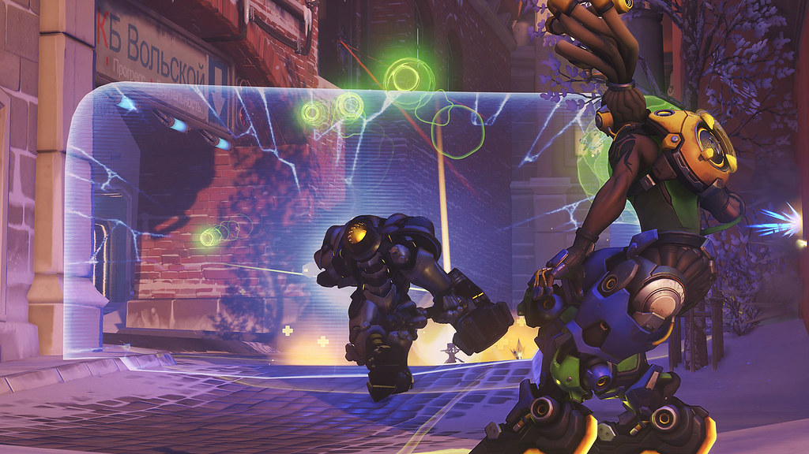
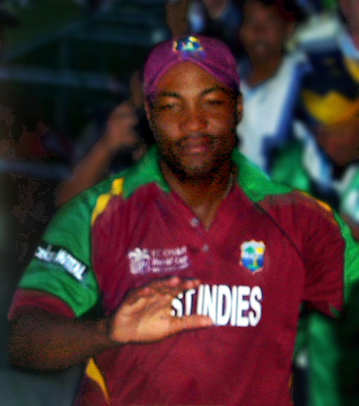
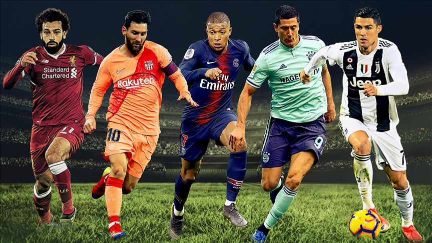

Esports
Overwatch League 2021

Overwatch has currently been in an interesting state with the meta seemingly being more focused on playing at range than before. That said heroes like Widowmaker are still not having a fun time due to the shields of Sigma keeping her at bay. This season has also had the Lunar New Year event Bounty Hunter added to it and that has been a fun addition. With Blizzconline hopefully having some information about Overwatch 2 and what fans can expect for the current Overwatch, it will be interesting to see what comes with the start of Competitive Season 27
The Overwatch League™ is an international esports league comprising 20 city-based teams and featuring the best Overwatch® players in the world. The 2021 season begins on April 16 and concludes with the playoffs and Grand Finals in September. Showcasing top-tier Overwatch competition, thrilling storylines, an eye-popping prize pool, robust viewership rewards, and cutting-edge production value, the Overwatch League is the world's premier esports league
Regular-season play will be structured in four tournament cycles: the May Melee, June Joust, Summer Showdown, and Countdown Cup. Teams will play four qualifier matches each cycle to determine seeding for each of the culminating tournaments. Teams will be divided into two groups based on their location this season: East and West. The East will consist of 8 teams, with the remaining 12 in the West. Regular-season qualifier matches and tournament qualification will be based on competition within each group.
Qualification for in-season tournaments and for the 2021 playoffs will be based on each team’s total League Points. There are two ways teams can earn League Points: winning qualifier matches and placing well in tournaments. Teams get 1 League Point for each match win during regular-season qualification matches. During tournaments, there’s additional points at stake:
- 1st place = 3 points
- 2nd place = 2 points
- 3rd place = 1 point
Overwatch League on twitter..
The balance lies in their hands 🤝
— Overwatch League (@overwatchleague) March 1, 2021
On 3/14 at 12pm PT, this panel of esteemed @PlayOverwatch experts will sit down and determine the rules for our upcoming Experimental Card Tournament.
📺 https://t.co/tbTGBrUfiE pic.twitter.com/378WI2b3EZ
League of Legends Worlds

The coronavirus pandemic put a halt to Riot Games hosting a multi-city tournament last year, however, the publisher aims to do so for 2021’s iteration of Worlds. More host cities will be announced throughout the course of the year.
John Needham, Global Head of Esports at Riot Games, spoke on the news: “After a year full of unexpected challenges, amazing competition, and major milestones for our sport, we’re looking forward to a season that should be even more thrilling. It’s only fitting that we return to China, home to our biggest league and tens of millions of longtime fans, to produce the world’s highest-calibre esports event in one of China’s most innovative cities.”
Alongside announcing its first host city for the 2021 World Championship, the publisher has unveiled initial details surrounding its League of Legends: Wild Rift esports structure.
Needham also spoke on creating a Wild Rift esports circuit: “While we continue to oversee a rollout of Wild Rift via Open Beta in numerous countries, we’re ready to establish a framework for players to compete at the highest level. This will be the year we will experiment and learn, setting the foundations for the long-term success of the sport. You will see our first competitions come to life later in 2021.”
The update follows on from Riot Games Southeast Asia already unveiling its competitive plans for the mobile game within Malaysia and Thailand. Tournaments, which will be hosted by ESL, are expected to take place in the regions sometime this year.
Cricket
2020-21 Road Safety World Series
The Road Safety World Series is a Twenty20 competition featuring retired cricketers, created by The Road Safety Cell of Maharashtra. Players and teams are stylized as "legends" of their respective countries.
The Road Safety World series was approved by the Board of Control for Cricket in India (BCCI).[5] The first edition of the tournament begun in March 2020, with the tournament set to take place across venues in Mumbai, and Pune. Sachin Tendulkar (India Legends), Brian Lara (West Indies Legends) Tillakaratne Dilshan (Sri Lanka Legends), Brett Lee (Australia Legends) and Jonty Rhodes (South Africa Legends) were the captains of their respective teams.[6] The tournament was to be played in a round-robin format with the top two finishers playing the final.[7]
On 13 March 2020, as a result of Government Advisory following the global coronavirus pandemic, the remaining seven matches were rescheduled to a later date.[8] It was earlier decided that the remaining seven matches of the tournament would be played behind the closed doors in DY Patil Stadium.[9]
According to Cricschedule, the series will now be starting on 5th March 2021 and will last till 21st March 2021
The organizers, instead of starting afresh in 2021, have opted to resume the previous edition, which was paused after only four games. Four teams – India Legends, Sri Lanka Legends, South Africa Legends, and West Indies Legends – will resume action in 2021, whereas England Legends and Bangladesh Legends will replace -led Australia Legends, who are set to miss due to their inability to travel to India owing to the strict COVID-19 restrictions in Australia.
Points table as of now
| Pos | Team | Pld | W | L | NR | Pts | NRR |
|---|---|---|---|---|---|---|---|
| 1 | India Legends | 2 | 2 | 0 | 0 | 4 | 0.638 |
| 2 | South Africa Legends | 1 | 1 | 0 | 0 | 2 | 0.742 |
| 3 | Sri Lanka Legends | 2 | 1 | 1 | 0 | 2 | −0.103 |
| 4 | Australia Legends(opted out of the tournament) | 1 | 0 | 1 | 0 | 0 | −0.350 |
| 5 | West Indies Legends | 2 | 0 | 2 | 0 | 0 | −0.738 |
| 6 | Bangladesh Legends | 0 | 0 | 0 | 0 | 0 | — |
| 7 | England Legends | 0 | 0 | 0 | 0 | 0 | — |
Chris Gayle returns to West Indies squad
.jpg)
Chris Gayle is targeting a third T20 world title as he returns to West Indies colours for the first time since the 2019 World Cup, and says that he is willing to fulfil whatever role is asked of him in the team's bid to retain the trophy in India this year.
Gayle, 41, has only ever opened the batting in T20I cricket and had almost exclusively batted at the top of the order in his franchise career before the start of the 2020 IPL. But after starting the tournament out of the Kings XI Punjab side, he hit 395 runs in nine innings at No. 3 for the franchise, averaging 43.88 and striking at 144.16.
In a press conference in Antigua on Monday, two days before the series opener against Sri Lanka, Gayle said that he was happy to bat wherever Kieron Pollard and Phil Simmons asked him to, saying that he would be "the best in the world" regardless of where he came in. He is one of four openers in the 14-man squad, along with Evin Lewis, Lendl Simmons and Andre Fletcher.
"It seems like I'm the No. 3 specialist now," he joked. "It was a role that the coach, Anil Kumble, asked me to play. He did mention it before the IPL actually started, which I had no problem with and then eventually, when I actually got the chance, they wanted my experience at No. 3 because Mayank [Agarwal] and KL Rahul were going great guns at the time.
"It's not a problem. I'm good at playing spin, I'm as good at playing fast bowlers as anyone as I'm an opener. But with West Indies cricket, whatever role they want me to play, I'm willing to play that particular role. We haven't fully discussed it but I'll get a bit of a heads up and work out what to look forward to in this particular series and down into the World Cup.
"If it's opening, I'm ready, No. 3, No. 5 - I'm pretty much flexible. I will still be the best No. 5 in the world, best No. 3 in the world."
Gayle admitted that he had considered walking away from the game, and that he had planned to focus his efforts on the franchise circuit as he heads into the twilight of his career, but that he found it impossible to turn down a West Indies call-up because "that's where my heart is".
"I thought about actually walking away from the game and then people said: 'No, don't do it, don't do it. Stay and play as long as possible.' So I decided I'm actually going to continue playing. I wasn't actually thinking down this road. I was like, I'm going to play franchise cricket, entertaining people as much as possible, and whatever is left to offer within the game from Chris Gayle, I want to exploit around the world.
"When I got the call and they asked if I'm willing and interested, I said: 'Yes, I want to play for West Indies'. That's where my heart is. I'm never going to turn down anything pertaining to West Indies cricket at this particular time. So I came back from Pakistan to be a part of the set-up leading into the World Cup so we can have a unity within the group, and then hopefully we can win this T20 trophy.
"At 41, that's what actually gets me through on a daily basis: it's more mental than physical to me. It's the willpower of the mind. The mind still wants to be out there and be out there on the park, still executing from a batting point of view and still having fun. That's what gives me that extra drive to continue playing. If the mind stops operating like that for me, then I'd have to ask myself a big question there, but for now, it's the mindset.
"The mindset is still good. I'm still looking after myself, I still do my training. Most people say 'are you on a diet?' I still eat properly, I still eat what I want, I still have my fun. I make sure I have a clear mind at all times. Once you have a clear mind you can be free to do whatever you want."
Gayle said that while his short-term ambition was to win this month's three-match series against Sri Lanka, the "bigger picture" was all about defending West Indies' world title. Gayle is one of eight men who won both the 2012 and 2016 finals, and said that he hoped his return would not distract from the team's long-term preparations for the tournament.
"I know being back, it might be a little bit of attention, but I don't want it to go in that regards to be honest with you," Gayle said. "We're looking at things as a team point of view. Pollard is a very strong captain [and] we have a lot of very, very good-quality players within the team. I want to win the series. I want to get off to a good start. It's really good to be back. Hopefully I can perform, help the team, and put the team in a winning position.
"I want to accomplish, starting off by winning the series, but the bigger picture is actually to get three T20 titles under my belt. That's actually the goal I'm setting in my head by winning the T20 World Cup. We have quite a few series coming up and we have a lot of cricket leading up to that. We'll try and take as much as possible out of these series coming up.
"The World Cup is still a long way off but by the time you quint [blink] it's World Cup time. So we have to try and keep the energy, keep fit, be ready and show the region what we are capable of with these particular guys."
Football
The Golden Boot candidates in Europe's top five leagues?

Cristiano Ronaldo, Lionel Messi, Robert Lewandowski
Mohamed Salah, Kylian Mbappe, Harry Kane, Luis Suarez and Erling Haaland also among the frontrunners in Europe's top five leagues; the highest goalscorer in Europe this season will win the Golden Shoe award; Lazio's Ciro Immobile is the current holder
A plethora of famous names are in the running for the topscorer plaudits across Europe's top five leagues.The overall top scorer across Europe will take home the Golden Shoe. Lazio's Ciro Immobile is the current holder, breaking 11 years of domination by Cristiano Ronaldo, Lionel Messi and Luis Suarez.
